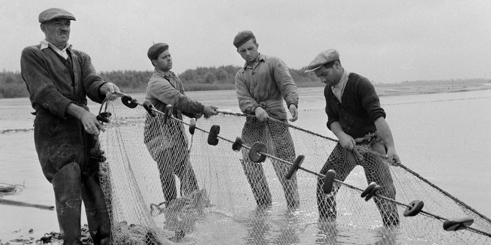

Története
A bástya eredete
A Várhegy az Árpád-házi királyok idejében szálláshelyként és – a körülötte levő települések részére – védelmi beépítésként szolgált. A várhegyi település fejlődése IV. Béla király városfejlesztése nyomán vált jelentősebbé, de mint az ország közigazgatási központja, Mátyás király korában vált uralkodó jellegűvé. Védőműveit, bástyáit a középkorban és a török uralom idején megerősítették, ugyanakkor újra és újra megrongálódtak. Maga a várnegyed is jelentős átalakuláson ment keresztül az idők során. Mátyás fényes, virágzó budavári palotájából a mohácsi vészt követő török uralom sok mindent elpusztított, megszüntetett és átalakított a Várban is. A törökök nyomán érkező osztrák erők pedig Bécsből kormányoztak, ahol már az új divat, a barokk művészet dívott. Ennek a bécsi divatot követő építészeti hullámnak további épületek estek áldozatul, egyebek mellett a halászok bástyája közelében álló Mátyás-templom is. A mai Halászbástya, a hajdani „Híradás” toronytól a Jezsuita lépcsőig terjedő bástyaszakasz alapfalaira épült, követve az egykori bástya hajtogatott alaprajzi elrendezését. Ez a hajtogatott várfal-védelmi rendszerben a bástya vonala úgy törik meg, hogy az egyes szakaszok egymást oldaltűzzel védhetik. Ezt a szakaszt a Rákóczi-szabadságharc leverését követően építette az osztrák hadvezetőség, az akkor modernnek számító hadászati elveknek megfelelően. A kör alaprajzú „Híradás” torony helyén épült a mai Halászbástya északi, karéjos főtornya.
Felújítása
A Halászbástya a Mátyás-templom 1874–1896 közötti helyreállításával kapcsolatos építészeti és városrendezési feladatoknak köszönheti a megvalósítását. A középkori templomaink védelméért és állapotainak megújulásáért oly sokat tévő Schulek Frigyes, a Mátyás-templom körül végzett kutatási munkákról szóló összegzésében már felismerte, hogy a templom egykor pénz híján el nem készült elemeinek hiánya miatt, valamint a hadászati szempontokból kialakított különös és kissé nyomott arányai révén (nem lehetett támpontot nyújtó magas, égbenyúló tornya), meg kellene tartani a kiásás által elért alacsonyabb talajszintet, és a környezetet hozzá rendezni. A Mátyás-templom megújításának elkészülte után az a kérdés már elodázhatatlanná vált, hogy a környezetet rendbe hozzák és a templomhoz méltóvá tegyék. Az eredeti elképzeléseknek megfelelően, ezt a területet is az ezredéves évfordulóra kellett volna rendezni, és bár az erre vonatkozó terveit Schulek idejében elkészítette, amelyet a Főváros Közmunkák Tanácsának még 1894-ben véleményezésre is előterjesztettek, az építkezést végül csak 1899-ben kezdték és több részletben valósult meg. 1901-ben és 1902-ben készült el a déli és északi lépcső, de az egész Halászbástyát az építkezés teljes befejezését követően, 1905. október 9-én adták át a fővárosnak.
Nevének eredete
Buda várának egykori középkori erődítményére – melynek egy része a dominikánus templom és kolostor alapfalát képezte, – már az 1850-es években a halászbástya megnevezést használták,[2][3][4] majd pedig a déli bástyakar építménye is szintén ezen a néven vált nevezetessé. A Halászok bástyája elnevezést feltehetőleg a budai városfalnak a halászok céhe őrizetére bízott szakaszáról kapta, de ennél is valószínűbb, hogy az alatta elterülő városrészről, a Halászvárosról – ami Víziváros déli, a Lánchíd környékére eső része volt – nevezték el. A halászok árujukat már a középkorban is a Mátyás-templom melletti térségben lévő halpiacra vitték, ám a halászok céhe nemcsak a halak árusításával törődött, szükség esetén tagjai vitézül védték a városfalat is.
